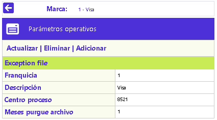
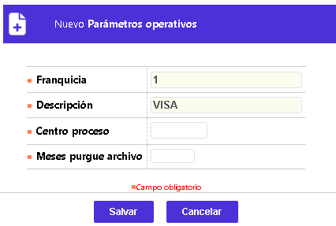
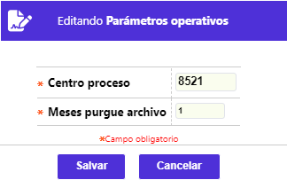

Franquicias
Parámetros operativos: Campos que posibilitan definir algunas de las condiciones que determinan la expiración de los registros contenidos en este archivo de reporte de las tarjetas extraviadas en el exterior, con el ánimo de prevenir su uso fraudulento.
El formulario contiene las opciones Actualizar, Eliminar, y Adicionar. Adicionalmente, cuenta con un botón en la parte superior para regresar al formulario principal de Franquicias.

Adicionar: Esta opción sólo se muestra cuando no existe información ingresada, una vez exista, sólo se mostrará la opción Actualizar. Si el usuario invoca la opción Adicionar se despliega un formulario con los siguientes bloques:

Centro proceso |
Campo alfanumérico de 4 dígitos, no obligatorio, que contiene el código identificador del centro de proceso para el Exception file para cada franquicia. |
Meses purgue archivo |
En este campo numérico de 2 dígitos, no obligatorio, se registra el parámetro que le indica al proceso que genera el Exception file, los meses en que debe permanecer una tarjeta reportada en este archivo de excepción, lo que debe tenerse en cuenta dado que el costo que ello implica. |
Actualizar: Si el usuario invoca la opción Actualizar se despliega un nuevo formulario en el cual los dos campos son modificables.

Franquicias | Clases de prefijos | Parámetros acciones para el exception file | Parámetros acciones por bloqueos | Parámetros regiones para el exception file